SmoothQuant：把量化难度迁移到权重，让 INT8 真正进入计算路径
ICML 2023 · QUANTIZATION / INFERENCE / SYSTEMS
Accurate and Efficient Post-Training Quantization for Large Language Models
Guangxuan Xiao、Ji Lin（共同一作）、Mickael Seznec、Hao Wu、Julien Demouth、Song Han · MIT / NVIDIA。ICML 2023，PMLR 202:38087–38099。首发 2022-11-18；精读指定 arXiv 2211.10438v7，2024-03-29，13 页。阅读及更新日期：2026-10-27。[1][2]
指定版本 PDF · arXiv v7 · 论文 HTML · 官方代码 · 作者 Slides · 作者 Talk · DOI
阅读路径：先理解缩放与 GEMM 的关系，再按原论文第 1–7 节和附录 A 阅读证据，最后进入外部研究与工程见解。正文区分 Original Paper、External Source、Interpretation。全部 10 张原图、11 张完整原表均保留；重排表可展开核对原始排版。
TL;DR：一条等价变换，三层不同的保证
一句话。 SmoothQuant 在离线阶段对激活输入通道做反向缩放、对权重做补偿，把激活异常值造成的量化难度分摊到权重，使普通 INT8 GEMM 可执行精度接近 FP16 的 W8A8 推理。[1]
一段话。 LLM 激活的大值集中在少数输入通道，per-token 量化仍让同一 token 的普通通道与异常通道共用大步长。直接 per-input-channel 量化能恢复精度，但其缩放位于 GEMM 的归约维内部，不适合论文采用的高效整数矩阵乘。SmoothQuant 令 X̂=X/s、Ŵ=sW，将缩放融合进前置 LayerNorm / RMSNorm 等参数，再使用 per-token 或 per-tensor 激活量化。浮点变换严格等价；W8A8 量化只有实验意义上的精度保持；系统加速还需要真实 INT8 kernel、融合及匹配的 workload。论文报告最高 1.56× context 加速、近 2× 显存节省，并把 MT-NLG 530B 从 16 张 A100 压到单节点 8 张。[1]
五个关键点：
- 问题在激活的通道不均衡。 一个 token 一把尺仍会被固定异常通道支配。
- 核心是离线改变坐标尺度。 与保留异常值 FP16 分支相比，执行路径可以更规则。
- α 是误差分摊参数。 0.5 是 OPT / BLOOM 的经验甜点；Llama 等实验不是统一使用 0.5。
- O1 / O2 / O3 是执行粒度。 它们共享平滑方法，但动态统计开销和标定风险不同。
- W8A8、KV8、全整数网络是不同概念。 “矩阵乘输入 INT8”不意味着 Softmax、Norm、缓存和输出都自动变成 INT8。
1. Introduction：精度与硬件效率为什么冲突
问题与已有方法
模型参数增长快于单卡显存。175B 参数仅 FP16 权重就约需 350 GB，尚未计入 KV cache、activation、workspace 与框架分配。Figure 1 给的是历史趋势与资源动机，不是“所有部署必须固定几张卡”的普适定理。[1, §1]
Figure 1 : The model size of large language models is developing at a faster pace than the GPU memory in recent years, leading to a big gap between the supply and demand for memory. Quantization and model compression techniques can help bridge the gap.
Original Paper · Figure 1 · v7 PDF p.1
Figure 1 深读。 先读模型规模曲线，再读 GPU memory 曲线；纵轴和不同系列展示的是资源增长的不匹配。读图的目的在于理解压缩需求，不能据此计算特定模型的峰值显存。图中的硬件与模型代表当时背景，现代加速器信息在后文单独更新。
原论文对比两条 W8A8 路线：ZeroQuant 用更细的动态量化提高可用性，但在本论文的 OPT-175B 评测中失效；LLM.int8() 将异常通道留给 FP16、其余走 INT8，恢复精度却引入拆分、混合计算和合并开销。[1][4][5]
观察、贡献与结果
激活异常值往往持续出现在相同输入通道。通道之间的尺度差异大，同一个通道跨 token 的量级差异相对小，允许用少量标定数据估计每通道尺度。权重相对更平坦，能承担一部分难度。SmoothQuant 因而无需重新训练预训练权重，而是做等价参数变换、常规 INT8 量化和后端替换。[1, §1]
Figure 2 : SmoothQuant’s intuition: the activation 𝐗 \mathbf{X} is hard to quantize because outliers stretch the quantization range, leaving few effective bits for most values. We migrate the scale variance from activations to weights 𝐖 \mathbf{W} during offline to reduce the quantization difficulty of activations. The smoothed activation 𝐗 ^ \hat{\mathbf{X}} and the adjusted weight 𝐖 ^ \hat{\mathbf{W}} are both easy to quantize.
Original Paper · Figure 2 · v7 PDF p.2
Figure 2 深读。 左侧原激活的 outlier 拉大整体范围，普通值只占很少离散等级；原权重则拥有充足的有效等级。沿中间的 “migrate difficulty” 读到右侧，激活变平缓、权重范围适度拉开。箭头表达的是尺度重新分配，不是把异常值删掉或复制到另一条精度分支。最终两边仍需量化，合适的迁移量才有意义。
2. Preliminaries：量化步长与 GEMM 轴
Eq. (1)：整数均匀量化
LaTeX / 复制公式
\overline{\mathbf X}=\left\lceil\frac{\mathbf X}{\Delta}\right\rfloor,\quad\Delta=\frac{\max|\mathbf X|}{2^{N-1}-1}X 是 FP16 张量，X̄ 是同 shape 的整数编码；Δ 是量化步长；N=8；⌈·⌋ 表示取最近整数，不是只向上取整。本文用零对称 absmax，整数最大正值为 127。恢复实数值是 Δ X̄。没有 clipping 时，单个元素的舍入误差至多约 Δ/2；用静态标定范围处理未来样本时，必须考虑饱和，原 Eq. (1) 未显式写 clamp。[1, §2]
数学直觉。 如果全局 absmax 为 100，步长约 0.787；0.1 会舍入到 0。这个例子是公式的教学代入，不是论文模型实测。“有效位数下降”指普通通道可利用的等级少，不是内存格式真的变成更少 bit。
工程含义。 动态量化在运行时求 absmax；静态量化预先保存步长。两者都需要把浮点值编码为整数，静态只是免去实时统计，不意味着整个 Q/DQ 成本消失。非对称量化还需 zero-point 与相应补偿，不能把本文对称公式直接当作任意硬件编码规则。
Tensor shape 与 per-channel 的两个含义
令 batch 展平进 token 维：X:[T,Ci]、W:[Ci,Co]、Y:[T,Co]。论文省略 batch；推理实现中通常 T=B·Lq。
Figure 3 : Definition of per-tensor, per-token, and per-channel quantization. Per-tensor quantization is the most efficient to implement. For vector-wise quantization to efficiently utilize the INT8 GEMM kernels, we can only use scaling factors from the outer dimensions (i.e. , token dimension T T and out channel dimension C o C_{o} ) but not inner dimension (i.e. , in channel dimension C i C_{i} ).
Original Paper · Figure 3 · v7 PDF p.3
Figure 3 深读。 上半图是一张矩阵一个 Δ；下半图是激活每一行一个 ΔX:[T,1]，权重每一个输出列一个 ΔW:<a class="citation" href="#cite-1">[1,Co]</a>。彩色条纹对应能够在 GEMM 完成后应用的两个外维。请特别区分：
| 操作 | 尺度所在维度 | Shape | 对普通 GEMM 的意义 |
|---|---|---|---|
| 激活 per-token | T，行 | [T,1] |
可在输出 epilogue 按行乘 |
| 权重 per-output-channel | Co，列 | <a class="citation" href="#cite-1">[1,Co]</a> |
可在输出 epilogue 按列乘 |
| 激活 per-input-channel | Ci，归约维 | <a class="citation" href="#cite-1">[1,Ci]</a> |
不能一般地提出整个求和 |
| SmoothQuant 平滑 | Ci，离线坐标尺度 | [Ci] |
同时改写激活来源与权重，运行时仍用前两种粒度 |
LaTeX / 复制公式
\mathbf Y=\mathrm{diag}(\Delta_X)\left(\overline{\mathbf X}\cdot\overline{\mathbf W}\right)\mathrm{diag}(\Delta_W)ΔX:[T] 和 ΔW:[Co] 的对角矩阵分别是 [T,T]、[Co,Co]；它们是记号，不应在代码中真的构造巨大对角矩阵。整数乘通常做 INT32 累加，再按行/列乘尺度并输出浮点或重新量化为 INT8。[1, §3]
逐元素展开：Ỹ[t,o]=ΔX[t]·ΔW[o]·Σj X̄[t,j]W̄[j,o]。原 Eq. (2) 写等号是在描述量化执行路径；与未量化的 XW 比较应写近似号。若尺度在 j 上不同，Σj ΔX[j] X̄[t,j] W̄[j,o] 无法把 ΔX[j] 提到总和外。专用 groupwise / block-scaled kernel 可以采用其他计算结构；论文的“不兼容”限定于其使用的高吞吐 INT8 GEMM 路径。
3. Review of Quantization Difficulty：为什么 per-token 仍救不了精度
三个实测观察
Figure 4 的 OPT-13B 层展示：（1）激活少数通道幅度超过 70；（2）大值沿相同通道在 token 维持续出现；（3）原权重相对均匀。它支持按通道平滑的动机，但一个可视化层不能证明任意层、任意语料都具有完全相同统计。[1, §3]
Figure 4 : Magnitude of the input activations and weights of a linear layer in OPT-13B before and after SmoothQuant. Observations: (1) there are a few channels in the original activation map whose magnitudes are very large (greater than 70); (2) the variance in one activation channel is small; (3) the original weight distribution is flat and uniform. SmoothQuant migrates the outlier channels from activation to weight. In the end, the outliers in the activation are greatly smoothed while the weight is still pretty smooth and flat.
Original Paper · Figure 4 · v7 PDF p.4
Figure 4 深读。 从左侧 Original 到右侧 SmoothQuant，每一组先看 activation surface，再看 weight surface；不要只看最高峰。平滑后激活峰值降低，权重在对应输入通道增大，但没有出现原激活那么极端的尺度支配。图的核心是两种张量同时可量化，不是权重最大值越小越好。3D 图的 token / channel 轴不能交换理解，否则会错误地以为 per-token 已解决问题。
论文给普通通道可用等级的启发式近似为 2^8·mi/m，其中 mi 是通道 absmax、m 是全张量 absmax。它解释量级差异；与 signed quantizer 的 127 正值等级属于不同计数口径，不应将 256 直接放进 Eq. (1) 的分母。
| Model size (OPT-) | 6.7B | 13B | 30B | 66B | 175B |
| FP16 | 64.9% | 65.6% | 67.9% | 69.5% | 71.6% |
| INT8 per-tensor | 39.9% | 33.0% | 32.8% | 33.1% | 32.3% |
| INT8 per-token | 42.5% | 33.0% | 33.1% | 32.9% | 31.7% |
| INT8 per-channel | 64.8% | 65.6% | 68.0% | 69.4% | 71.4% |
Original Paper · Table 1 · 完整 HTML 重排
核对原表：标题、粗体、下划线与脚注
Table 1: Among different activation quantization schemes, only per-channel quantization ( Bondarenko et al., 2021 ) preserves the accuracy, but it is not compatible (marked in gray ) with INT8 GEMM kernels. We report the average accuracy on WinoGrande, HellaSwag, PIQA, and LAMBADA.
Original Paper · Table 1 · v7 PDF p.3
Table 1 审计。 完整比较 OPT 6.7B、13B、30B、66B、175B；平均 accuracy 来自 WinoGrande、HellaSwag、PIQA、LAMBADA。175B 的 FP16 为 71.6%，per-tensor 为 32.3%、per-token 为 31.7%，而模拟 per-channel 激活为 71.4%。per-token 并非每一规模都优于 per-tensor，175B 甚至略低。表中灰色行是算法精度上可行、论文 GEMM 路径上不兼容的粒度，不能拿它直接声称相同系统吞吐。
因果解释。 每一行都有同一个异常通道，按行独立选择尺子后，各行仍被大值支配。按输入通道选尺能改善精度，却把尺度放到了求和内部。SmoothQuant 的工作就是保留这种按通道重分配的收益，同时在运行时使用可映射的量化粒度。
4. SmoothQuant：重建等价变换与执行链路
Eq. (3)：浮点等价，量化误差重新分配
LaTeX / 复制公式
\mathbf Y=(\mathbf X\mathrm{diag}(\mathbf s)^{-1})\cdot(\mathrm{diag}(\mathbf s)\mathbf W)=\widehat{\mathbf X}\widehat{\mathbf W}s:[Ci] 且各分量为正，D=diag(s):[Ci,Ci]。X̂=X D⁻¹:[T,Ci]；Ŵ=D W:[Ci,Co]；输出仍为 [T,Co]。因为 D⁻¹D=I，插入变换不改变实数矩阵乘。带 bias 时 Y=X̂Ŵ+b，当前线性层 bias 不用随 s 改变。浮点有限精度会引入微小舍入，因此实际应数值验证，而非要求 bitwise 相等。[1, §4]
与量化误差的关系。 设反量化后的量化张量分别为 X̂+Ex、Ŵ+Ew，则：
LaTeX / 复制公式
\widetilde{\mathbf Y}-\mathbf Y=E_X\widehat{\mathbf W}+\widehat{\mathbf X}E_W+E_X E_W这些是解释性推导，不是原论文编号公式。它表明既要减少激活误差经过权重的放大，也要控制权重误差经过激活的放大；只把激活压到很小会把问题全部推给权重。α 公式依据最大幅度平衡，并未直接最小化这个端到端误差，也不是全局最优保证。
Eq. (4)：α 如何分摊难度
LaTeX / 复制公式
s_j=\frac{\max|\mathbf X_j|^\alpha}{\max|\mathbf W_j|^{1-\alpha}}aj=max_t|X[t,j]| 来自标定样本；wj=max_o|W[j,o]| 来自权重；两者均 [Ci]。逐通道计算正值 sj=aj^α / wj^(1−α)。极小值需要数值保护。[1, §4]
逐步推导：
LaTeX / 复制公式
\widehat a_j=a_j^{1-\alpha}w_j^{1-\alpha}=(a_jw_j)^{1-\alpha},\quad\widehat w_j=a_j^\alpha w_j^\alpha=(a_jw_j)^\alpha当 α=0.5，两个对应输入通道的最大幅度都为 sqrt(aj·wj)。它让同一通道的激活与权重共享量级，不保证所有输入通道都具有相同最大幅度。只有 α=1 时标定激活各通道峰值才都归一到 1；此时权重可能难以量化。α=0 则使权重每输入通道最大值为 1，难度留给激活。
OPT / BLOOM 的 α=0.5、GLM-130B 的 α=0.75 是论文经验配置；Table 6 的 LLaMA 用 0.8，Table 7 的模型用 0.6–0.9。数值不是架构无关常数，也不能把 OPT 的 0.4–0.6 甜点推广到所有模型。
Figure 5 : Main idea of SmoothQuant when α \alpha is 0.5 0.5 . The smoothing factor s s is obtained on calibration samples and the entire transformation is performed offline. At runtime, the activations are smooth without scaling.
Original Paper · Figure 5 · v7 PDF p.4
Figure 5 深读与精确例子。 左侧 X 是 2×4、W 是 4×3。激活通道 absmax 为 <a class="citation" href="#cite-2">[2,16,2,9]</a>，权重输入通道 absmax 为 <a class="citation" href="#cite-2">[2,1,2,1]</a>；α=0.5 得 s=<a class="citation" href="#cite-1">[1,4,1,3]</a>。激活第 2 通道除以 4，权重第 2 行乘以 4；第 4 通道同理处理。右侧激活峰值 <a class="citation" href="#cite-2">[2,4,2,3]</a> 与权重行峰值 <a class="citation" href="#cite-2">[2,4,2,3]</a> 对齐。
# 来自原 Figure 5 的矩阵；论文约定 W=[Ci,Co]
X = [[1, -16, 2, 6], [-2, 8, -1, -9]]
W = [[2, 1, -2], [1, -1, -1], [2, -1, -2], [-1, -1, 1]]
s = <a class="citation" href="#cite-1">[1, 4, 1, 3]</a>
# X_hat[:,j] = X[:,j] / s[j]
# W_hat[j,:] = W[j,:] * s[j]
# 两条浮点路径输出均为 [[-16,9,16],[11,0,-11]]
Agent-created Visualization · 原 Figure 5 数据 · CPU 数学计算
调 α：看两边的峰值如何重新分配
横向比较四个输入通道的激活/权重 absmax。所有 α 下浮点乘积应不变；选择量化 bit 后的误差是这一小矩阵的模拟误差。
| Ci | s | 激活峰值 | 权重峰值 |
|---|
单矩阵误差不应对应 Figure 10 的 LAMBADA accuracy，也不证明这个 α 是模型最优值。Round 使用 nearest，half away from zero；不同后端 tie 规则可不同。
融合到 LayerNorm / RMSNorm：哪些参数真的要改
设前置 LayerNorm 输出 x=γ⊙z+β，其中 z 是 normalization 后的单位化向量。要得到 x/s，修改 γ′=γ/s、β′=β/s；后续线性层输入通道权重乘 s。RMSNorm 没有 β，只改 γ。不能在任意输入上先除 s、再用原参数做 Norm 来替代这一融合：归一化统计一般会改变。[3]
PyTorch nn.Linear.weight 的 layout 是 [Co,Ci]，所以代码乘列 weight *= s[None,:]；原论文 W 是 [Ci,Co]，所以记号乘行。看错转置会破坏等价性，shape 能 broadcast 成功也不代表正确。
# 重建的核心逻辑，省略框架分支；非完整部署脚本
# 各 fc.weight 为 [Co,Ci]；共享同一个 norm 输出
a = absmax_inputs_over_calibration_tokens() # [Ci]
w = max_over_outputs_and_consumers(fc_weights) # [Ci]
s = clamp_min(a**alpha / clamp_min(w)**(1-alpha))
norm.weight /= s
if norm.bias is not None:
norm.bias /= s
for fc in all_consumers_of_this_norm_output:
fc.weight *= s[None, :]
共享消费者必须同一尺度。 Q/K/V 共用 Norm 输出，wj 应取三组权重的共同最大值。Llama 的 gate_proj / up_proj 共用 FFN Norm；Mixtral 的 router 与各 expert 的 w1/w3 也共用该输入，必须一起补偿。官方 smooth_lm 对这些情况逐模型处理。[3]
若输出还走未同步改写的 residual 分支，随意缩放会改变整个 block。原文讨论可增加 residual 分支缩放，但“零额外 kernel”依赖可融合的位置；非线性、独立消费者、down_proj、图优化重排都要逐边检查。官方代码默认只在 attention 与 FFN 入口做这种 Norm 融合，不是每一个量化 Linear 前都直接加一个平滑乘法。
Agent-created Diagram · Mermaid · 解释性关系，非原论文图

图的文字结构
flowchart TB subgraph OFF["Offline · 冻结 checkpoint"] A["代表性语料前向 / 输入通道 absmax"] --> B["选择 α / 共同消费者的权重 absmax"] B --> C["计算 s / Norm γ、β 除 s / 所有 fc 输入列乘 s"] C --> D["平滑后重新标定 Q/DQ / 导出整数权重"] end D --> E["Runtime · Norm 已产生 X/s"] E --> F["激活编码 INT8 / dynamic 或 static"] F --> G["INT8 GEMM / INT32 累加"] G --> H["尺度 epilogue / FP16 或 INT8 输出"] H --> I["Norm、Softmax、残差与缓存依后端精度"]
Transformer 精度映射、训练与推理
Figure 6 : SmoothQuant’s precision mapping for a Transformer block. All compute-intensive operators like linear layers and batched matmul ( BMM s) use INT8 arithmetic.
Original Paper · Figure 6 · v7 PDF p.5
Figure 6 深读。 从 LayerNorm / 量化开始沿主链读 Linear、Q/K/V、BMM、Softmax、第二个 BMM、输出投影、残差与 FFN；INT8 标记主要位于 compute-heavy 矩阵乘，FP16 标记保留在轻量算子与部分边界。它是精度路径，不是新的 Transformer 架构。Softmax 的概率再编码成 INT8 才能供后续 INT8 BMM，尺度与输出类型必须匹配。
训练 pipeline 本身不变：此方法对已训练 checkpoint 做 PTQ，没有新增训练 loss、optimizer、梯度或训练 token 预算。离线校准 pipeline 为：冻结模型 → 代表性语料前向 → 输入通道统计 → 选择 α → 融合平滑 → 在平滑后的模型上重新收集静态 Q/DQ 尺度 → 整数转换与后端验证。
prefill 处理 [B,Lq,D]，QK logits 为 [B,Hq,Lq,Lk]；decode 中 Lq=1，K/V 来自历史缓存。对于标准 MHA，两个 attention BMM 的量级均为 O(B·H·Lq·Lk·dh)。Llama / GQA 的 query head 与 KV head 不同，要由实际 attention kernel 处理 head 分组，不能照搬 OPT 的 shape / cache 实现。
推理得到 hidden states / logits，再做任务评估或生成。平滑融合不改变理论 FLOPs：Linear 仍约 2T·Ci·Co，不会减少乘加次数；收益来自整数指令吞吐、存储与带宽，以及减少混合精度路径。
O1 / O2 / O3 与资源账本
| Method | Weight | Activation |
| W8A8 | per-tensor | per-tensor dynamic |
| ZeroQuant | group-wise | per-token dynamic |
| LLM.int8() | per-channel | per-token dynamic+FP16 |
| Outlier Suppression | per-tensor | per-tensor static |
| SmoothQuant-O1 | per-tensor | per-token dynamic |
| SmoothQuant-O2 | per-tensor | per-tensor dynamic |
| SmoothQuant-O3 | per-tensor | per-tensor static |
Original Paper · Table 2 · 完整 HTML 重排
核对原表：标题、粗体、下划线与脚注
Table 2: Quantization setting of the baselines and SmoothQuant. All weight and activations use INT8 representations unless specified. For SmoothQuant, the efficiency improves from O1 to O3 (i.e. , lower latency).
Original Paper · Table 2 · v7 PDF p.5
Table 2 深读。 原表 SmoothQuant 三档权重都 per-tensor INT8；O1 的 activation 是 per-token dynamic，O2 是 per-tensor dynamic，O3 是 per-tensor static。O1→O2 减少尺度粒度，O2→O3 消除运行时范围统计。Table 7 的 per-channel weight / per-token activation 是新版实验设定，不能直接标为 Table 2 的 O3。
| 成本 | 原始 FP16 | 真正 W8A8 | 分析边界 |
|---|---|---|---|
| Linear 权重主存 | 2CiCo bytes |
CiCo bytes + scales |
embedding、head、bias、alignment 可能保留高精度 |
| 一个 GEMM 输入 | 2TCi bytes |
TCi bytes + scales |
实现若同时保留 FP16 与 INT8 副本，会增加峰值 |
| 整数累加 | 浮点实现相关 | 典型 INT32 | 输出、epilogue 与 workspace 不自动减半 |
| 离线统计 | 无 | Ci 个最大值 + 前向工作集 |
标定仍可能需要大模型加载和全精度前向 |
| 平滑参数改写 | 无 | 权重读写 O(CiCo) |
不改算子理论复杂度；后端 packing 另计 |
| 动态量化统计 | 无 | activation absmax + 编码 O(TCi) |
小 batch decode 更容易暴露 reduction / launch 成本 |
| KV cache | 取决于后端 | 可独立配置 KV8 | W8A8 checkpoint 不能证明缓存 dtype |
Agent-created Calculator · 逻辑张量字节，非峰值实测
权重减半以后，KV 还占多少？
分别选择权重和缓存 bit。层数与 head 结构可调，观察 GQA、上下文长度和 batch 对容量的影响。
weight bytes=P·bw/8；KV bytes=2·B·L·Nlayers·Hkv·dh·bkv/8。排除 scales、packing padding、未量化模块、workspace、allocator 与临时副本。GiB=2³⁰ bytes；改变 bit 不生成 accuracy/latency 预测。
5. Experiments：逐设置、逐图表审计
5.1 Setups：哪些变量固定，哪些信息未报告
原论文比较 naive W8A8、ZeroQuant、LLM.int8()、Outlier Suppression；各粒度完整保存在 Table 2。accuracy 部分使用预训练 OPT / BLOOM / GLM，以及后续加入的指令模型与 Llama 等系列；不是把每个模型重新训练一次。[1, §5.1]
| 项目 | 论文报告 | 解读与复现要求 |
|---|---|---|
| 标定数据 | Pile 中 512 随机句子；α 在 Pile validation 子集上快速 grid search | 同一量化模型评估多个任务；不要按测试集重新调尺度 |
| α | OPT / BLOOM 0.5；GLM 0.75 | 新架构见 Tables 6–7 |
| 基础评测 | 7 项 zero-shot accuracy + WikiText PPL | 表间“平均值”有不同任务集合 |
| GLM 评测 | LAMBADA、MMLU、MNLI、QNLI | 因部分常用 benchmark 出现在 GLM 训练数据中而换任务 |
| GLM 静态尺度 | 标定时 clip top 2% tokens | 与普通 absmax O3 不完全同一操作 |
| 软件 | lm-eval-harness；GLM 官方 repo；PyTorch / HF、FasterTransformer、CUTLASS | 要锁版本、prompt、PPL stride / context |
| 硬件 | NVIDIA A100 80GB servers | 不能外推为任意 NPU / CPU 的同倍数收益 |
| context workload | batch=4，一次产生全部 hidden states；记录 peak GPU memory | 是 prefill/context 计算，不是完整请求 TTFT |
| 训练项 | PTQ 不新增 optimizer / LR / epochs | 原 checkpoint 的训练 token 不是该算法新增预算 |
| 未充分报告 | 完整 α grid、重复次数/误差条、warmup/计时同步、部分 decode 计时口径与软件 commit | 这些是复现缺口，不能自行填数 |
官方当前 get_act_scales 默认 512 样本、每条至多 512 tokens、seed=42，输入 hook 遍历 nn.Linear，将 [B,L,C] 展平后逐通道取 absmax；这是代码核查结果，与论文明确写出的细节分开。[3]
5.2 Accurate Quantization：大模型保持了什么
| OPT-175B | LAMBADA | HellaSwag | PIQA | WinoGrande | OpenBookQA | RTE | COPA | Average | WikiText |
| FP16 | 74.7% | 59.3% | 79.7% | 72.6% | 34.0% | 59.9% | 88.0% | 66.9% | 10.99 |
| W8A8 | 0.0% | 25.6% | 53.4% | 50.3% | 14.0% | 49.5% | 56.0% | 35.5% | 93080 |
| ZeroQuant | 0.0%* | 26.0% | 51.7% | 49.3% | 17.8% | 50.9% | 55.0% | 35.8% | 84648 |
| LLM.int8() | 74.7% | 59.2% | 79.7% | 72.1% | 34.2% | 60.3% | 87.0% | 66.7% | 11.10 |
| Outlier Suppression | 0.00% | 25.8% | 52.5% | 48.6% | 16.6% | 53.4% | 55.0% | 36.0% | 96151 |
| SmoothQuant-O1 | 74.7% | 59.2% | 79.7% | 71.2% | 33.4% | 58.1% | 89.0% | 66.5% | 11.11 |
| SmoothQuant-O2 | 75.0% | 59.0% | 79.2% | 71.2% | 33.0% | 59.6% | 88.0% | 66.4% | 11.14 |
| SmoothQuant-O3 | 74.6% | 58.9% | 79.7% | 71.2% | 33.4% | 59.9% | 90.0% | 66.8% | 11.17 |
Original Paper · Table 3 · 完整 HTML 重排
核对原表：标题、粗体、下划线与脚注
Table 3: SmoothQuant maintains the accuracy of OPT-175B model after INT8 quantization, even with the most aggressive and most efficient O3 setting (Table 2 ). We extensively benchmark the performance on 7 zero-shot benchmarks (by reporting the average accuracy) and 1 language modeling benchmark (perplexity). *For ZeroQuant, we also tried leaving the input activation of self-attention in FP16 and quantizing the rest to INT8, which is their solution to the GPT-NeoX-20B. But this does not solve the accuracy degradation of OPT-175B.
Original Paper · Table 3 · v7 PDF p.6
Table 3：OPT-175B。 七任务简单平均 accuracy ↑，WikiText perplexity ↓。原表保留全部 8 方法与每项结果，ZeroQuant 的 * 注释说明作者尝试 self-attention 输入 FP16 的变体仍未解决精度问题。
O3 相比 FP16：平均 66.9%→66.8%，下降 0.1 个百分点，相对下降约 0.15%；PPL 10.99→11.17，增加 0.18，约 1.64%。相对 LLM.int8()，O3 平均高 0.1 个百分点，PPL 却高 0.07。单任务 WinoGrande 从 72.6%→71.2%，下降 1.4 个百分点，COPA 从 88%→90%。平均接近不等于所有任务都完全一致，也无误差条证明小差异统计显著。
naive W8A8、ZeroQuant、Outlier Suppression 在这里 PPL 为 93080、84648、96151，远高于 FP16；accuracy 接近任务随机/弱基线区间。它们的严重失效支持激活处理的重要性，但结论是本论文配置下的结果，不能用作这些方法所有版本、所有模型的永久排名。
| Method | OPT-175B | BLOOM-176B | GLM-130B* |
| FP16 | 71.6% | 68.2% | 73.8% |
| W8A8 | 32.3% | 64.2% | 26.9% |
| ZeroQuant | 31.7% | 67.4% | 26.7% |
| LLM.int8() | 71.4% | 68.0% | 73.8% |
| Outlier Suppression | 31.7% | 54.1% | 63.5% |
| SmoothQuant-O1 | 71.2% | 68.3% | 73.7% |
| SmoothQuant-O2 | 71.1% | 68.4% | 72.5% |
| SmoothQuant-O3 | 71.1% | 67.4% | 72.8% |
Original Paper · Table 4 · 完整 HTML 重排
核对原表：标题、粗体、下划线与脚注
Table 4: SmoothQuant works for different LLMs. We can quantize the 3 largest, openly available LLM models into INT8 without degrading the accuracy. For OPT-175B and BLOOM-176B, we show the average accuracy on WinoGrande, HellaSwag, PIQA, and LAMBADA. For GLM-130B we show the average accuracy on LAMBADA, MMLU, MNLI, and QNLI. *Accuracy is not column-wise comparable due to different datasets.
Original Paper · Table 4 · v7 PDF p.6
Table 4：不同架构。 OPT / BLOOM 平均的是 4 个常识任务；GLM 平均的是另一组 4 个任务，所以列间绝对分数不能比较。原 caption 的 “not column-wise comparable” 在这里按任务集合解释，保留原注释。
O3 对 OPT：71.6%→71.1%，−0.5 pp；BLOOM：68.2%→67.4%，−0.8 pp；GLM：73.8%→72.8%，−1.0 pp。O1 的 GLM 为 73.7%，更接近 FP16。O2 的 GLM 72.5% 甚至低于 O3 72.8%，说明粒度/动态并不构成每任务严格单调的 accuracy 排序。作者将 BLOOM O3 的损失归因于静态统计与测试输入不匹配；这是合理解释，但表本身没有隔离该原因的完整干预实验。
Figure 7 : SmoothQuant-O3 (the most efficient setting, defined in Table 2 ) preserves the accuracy of OPT models across different scales when quantized to INT8. LLM.int8() requires mixed precision and suffers from slowing down.
Original Paper · Figure 7 · v7 PDF p.6
Figure 7：跨 OPT 规模。 横轴从较小 OPT 到 175B；纵轴是 4 任务平均 accuracy。FP16、LLM.int8()、SmoothQuant-O3 曲线接近，naive / ZeroQuant 在更大规模退化。读图关注退化随 scale 的出现，而非把一条连接线当成未测规模上的预测。图证明所测 OPT 系列的稳定性，不直接证明新架构或任意长度。
| OPT-IML-30B | LAMBADA | WikiText |
| FP16 | 69.12% | 14.26 |
| W8A8 | 4.21% | 576.53 |
| ZeroQuant | 5.12% | 455.12 |
| LLM.int8() | 69.14% | 14.27 |
| Outlier Suppression | 0.00% | 9485.62 |
| SmoothQuant-O3 | 69.77% | 14.37 |
Original Paper · Table 5 · 完整 HTML 重排
核对原表：标题、粗体、下划线与脚注
Table 5: SmoothQuant’s performance on the OPT-IML model.
Original Paper · Table 5 · v7 PDF p.7
Table 5：OPT-IML-30B。 LAMBADA 69.12%→69.77%，提高 0.65 pp；WikiText PPL 14.26→14.37，增加 0.11（约 0.77%）。与 LLM.int8() 的 69.14%、14.27 相比，并非两个指标都占优。两个语言任务不足以证明指令遵循、安全或多轮聊天能力全面保持。
| Wiki PPL | 7B | 13B | 30B | 65B |
| FP16 | 11.51 | 10.05 | 7.53 | 6.17 |
| W8A8 SmoothQuant | 11.56 | 10.08 | 7.56 | 6.20 |
Original Paper · Table 6 · 完整 HTML 重排
核对原表：标题、粗体、下划线与脚注
Table 6: SmoothQuant can enable lossless W8A8 quantization for LLaMA models ( Touvron et al., 2023a ) . Results are perplexities on the WikiText-2 dataset with a sequence length of 512. We used per-token activation quantization and α \alpha =0.8 for SmoothQuant.
Original Paper · Table 6 · v7 PDF p.7
Table 6：LLaMA。 WikiText-2，sequence length=512，per-token activation，α=0.8。7B / 13B / 30B / 65B 的 PPL 增加分别为 0.05 / 0.03 / 0.03 / 0.03；相对为约 0.43% / 0.30% / 0.40% / 0.49%。caption 称 “lossless”，应读作小幅损失可接受，而非逐输出相等。这里不是 O3 静态 per-tensor 配置，不能与长度 2048 的 Table 7 直接拼成一条模型大小曲线。
| Model | Method | PPL | |
| Llama-2-7B | FP16 | 5.474 | |
| W8A8 SQ | 5.515 | 0.85 | |
| Llama-2-13B | FP16 | 4.950 | |
| W8A8 SQ | 4.929 | 0.85 | |
| Llama-2-70B | FP16 | 3.320 | |
| W8A8 SQ | 3.359 | 0.9 | |
| Falcon-7B | FP16 | 6.590 | |
| W8A8 SQ | 6.629 | 0.6 | |
| Falcon-40B | FP16 | 5.228 | |
| W8A8 SQ | 5.255 | 0.7 | |
| Mistral-7B | FP16 | 5.253 | |
| W8A8 SQ | 5.277 | 0.8 | |
| Mixtral-8x7B | FP16 | 3.842 | |
| W8A8 SQ | 3.893 | 0.8 |
Original Paper · Table 7 · 完整 HTML 重排
核对原表：标题、粗体、下划线与脚注
Table 7: SmoothQuant can enable lossless W8A8 quantization for Llama-2 ( Touvron et al., 2023b ) , Falcon ( Almazrouei et al., 2023 ) , Mistral ( Jiang et al., 2023 ) , and Mixtral ( Jiang et al., 2024 ) models. Results are perplexities on the WikiText-2 dataset with a sequence length of 2048. We used per-token activation quantization and per-channel weight quantization for SmoothQuant.
Original Paper · Table 7 · v7 PDF p.7
Table 7：v7 新模型。 WikiText-2，sequence length=2048；per-token activation + per-output-channel weight，α 按模型取值。Llama-2-7B PPL 5.474→5.515（+0.041，约 0.75%）；Llama-2-13B 4.950→4.929（−0.021）；70B 3.320→3.359（约 +1.17%）；Mixtral 3.842→3.893（约 +1.33%）。所有模型的双行、α 均保留，不能只摘“变好”的 13B。
MoE 结果证明该语言建模设置可以扩展到专家架构；没有 router 稳定性、各 expert 标定覆盖、推理 kernel 吞吐及长上下文任务的完整评测。官方当前 ppl_eval 是 simulated quantization：浮点 tensor 存放离散值，并使用浮点 F.linear，不能把这类 PPL 结果自动解释为模型已在真实 INT8 上得到同等加速。[3]
5.3 Speedup and Memory Saving：context 与 decode 分开读
Figure 8 : The PyTorch implementation of SmoothQuant-O3 achieves up to 1.51 × \times speedup and 1.96 × \times memory saving for OPT models on a single NVIDIA A100-80GB GPU, while LLM.int8() slows down the inference in most cases.
Original Paper · Figure 8 · v7 PDF p.8
Figure 8：PyTorch 单卡。 四个子图按 OPT-13B / 30B、Latency / Memory 分组，横轴 sequence length 128 / 256 / 512，batch=4；柱上是实测数值。OPT-30B、256 tokens 的 FP16 约 343 ms，SQ 约 228 ms，对应约 1.51×；最高 memory saving 约 1.96×。LLM.int8() 显存也明显下降，却常更慢，直接说明“省权重字节”与“端到端加速”不是同一指标。
图对应一次 context hidden states 计算。它没有 tokenization、请求排队、sampling 等完整链路，因此不能把 228 ms 直接叫服务 TTFT。Figure 8 只画了 13B / 30B，虽然 §5.3 描述单卡评测包含 6.7B，不能虚构未显示的 6.7B 柱值。
Figure 9 : Inference latency (top) and memory usage (bottom) of the FasterTransformer implementation on NVIDIA A100-80GB GPUs. For smaller models, the latency can be significantly reduced with SmoothQuant-O3 by up to 1.56x compared to FP16. For the bigger models (OPT-66B and 175B), we can achieve similar or even faster inference using only half number of GPUs. Memory footprint is almost halved compared to FP16.
Original Paper · Figure 9 · v7 PDF p.9
Figure 9：FasterTransformer。 上排 latency、下排 memory；小模型单卡同比，大模型比较 FP16 2卡 / SQ 1卡（66B）、FP16 8卡 / SQ 4卡（175B）。最高 1.56× 出现在小模型特定 context 配置。大模型图主要支持“减少 GPU 数仍有相近或更低延迟”，不是相同卡数固定的纯 kernel speedup。
图中 66B 一些点 SQ 更慢，例如长度 256 的 SQ 约 131 ms 对 FP16 122 ms，慢约 7.4%；长度 1024 是 490 对 489 ms。应逐点按 legend 对应柱读取，不能概括成所有点严格更快。由于 tensor parallel 度同时改变，通信、分片与显存利用都变了；硬件资源成本收益是合理结论，而理论 INT8 算力翻倍不是测到的端到端倍数。
| BS | SeqLen | Latency (ms) | Memory (GB) | ||||
| FP16 | Ours | Speedup () | FP16 | Ours | Saving () | ||
| OPT-30B (1 GPU) | |||||||
| 1 | 512 | 422 | 314 | 1.35 | 57 | 30 | 1.91 |
| 1 | 1024 | 559 | 440 | 1.27 | 58 | 31 | 1.87 |
| 16 | 512 | 2488 | 1753 | 1.42 | 69 | 44 | 1.59 |
| 16 | 1024 | OOM | 3947 | - | OOM | 61 | - |
| OPT-175B (8 GPUs) | |||||||
| 1 | 512 | 426 | 359 | 1.19 | 44 | 23 | 1.87 |
| 1 | 1024 | 571 | 475 | 1.20 | 44 | 24 | 1.85 |
| 16 | 512 | 2212 | 1628 | 1.36 | 50 | 30 | 1.67 |
| 16 | 1024 | 4133 | 3231 | 1.28 | 56 | 37 | 1.52 |
Original Paper · Table 8 · 完整 HTML 重排
核对原表：标题、粗体、下划线与脚注
Table 8: SmoothQuant ’s performance in the decoding stage.
Original Paper · Table 8 · v7 PDF p.8
Table 8：decoding。 保留 BS、SeqLen、两种 latency、speedup、memory、saving，以及 OOM。OPT-30B、B=16、512 行给 2488→1753 ms，原表 1.42×；B=16、1024 时 FP16 OOM，SQ 为 3947 ms、61 GB。OOM 行没有有限 speedup，也不能写成无限倍速度提升。
原正文说 “per-token decoding latency”，但表中数百/数千 ms 的值没有明确生成 token 数、是否汇总与平均、是否包含 context。在缺少协议澄清前，本精读沿用表的 “Latency (ms)” 标签，不将其直接当 TPOT。 175B memory 数值约 44–56 GB，从量级判断可能是每卡量，但 caption 没有充分定义汇总口径；这也不能和 Figure 9 的总 memory 无条件相加比较。
原 saving 列与已取整 memory 不总一致：30B 的 57/30=1.90，但表写 1.91；175B 的 44/23≈1.91，而表写 1.87。可能用未取整数计算，也可能存在报表差异；原值完整保留，不擅自“更正”成新实测值。
5.4 Scaling Up：530B 在单节点内服务
| LAMBADA | HellaSwag | PIQA | WinoGrande | Average | |
| FP16 | 76.6% | 62.1% | 81.0% | 72.9% | 73.1% |
| INT8 | 77.2% | 60.4% | 80.7% | 74.1% | 73.1% |
Original Paper · Table 9 · 完整 HTML 重排
核对原表：标题、粗体、下划线与脚注
Table 9: SmoothQuant can quantize MT-NLG 530B to W8A8 with negligible accuracy loss.
Original Paper · Table 9 · v7 PDF p.8
Table 9：accuracy。 MT-NLG 530B 的 4 任务平均 FP16 / INT8 都显示 73.1%。但 LAMBADA +0.6 pp、HellaSwag −1.7 pp、PIQA −0.3 pp、WinoGrande +1.2 pp。显示精度下的平均抵消，不能推出任意任务没有损失。没有对逐 token 分布或长推理链给出保证。
| SeqLen | Prec. | #GPUs | Latency | Memory |
| 128 | FP16 | 16 | 232ms | 1040GB |
| INT8 | 8 | 253ms | 527GB | |
| 256 | FP16 | 16 | 451ms | 1054GB |
| INT8 | 8 | 434ms | 533GB | |
| 512 | FP16 | 16 | 838ms | 1068GB |
| INT8 | 8 | 839ms | 545GB | |
| 1024 | FP16 | 16 | 1707ms | 1095GB |
| INT8 | 8 | 1689ms | 570GB |
Original Paper · Table 10 · 完整 HTML 重排
核对原表：标题、粗体、下划线与脚注
Table 10: When serving MT-NLG 530B, SmoothQuant can reduce the memory by half at a similar latency using half number of GPUs, which allows serving the 530B model within a single node.
Original Paper · Table 10 · v7 PDF p.9
Table 10：系统。 FP16 用 16 张、INT8 用 8 张 A100 80GB；sequence length 128 / 256 / 512 / 1024。128 时 232→253 ms，SQ 慢约 9.1%；1024 时 1707→1689 ms，快约 1.1%。所以主要贡献是约相同延迟下 卡数减半。
memory 1040→527 GB 对应约 1.97×；1095→570 GB 对应约 1.92×。8×80 GB 是 640 GB 标称总容量；“single node”是 8-GPU 服务器，不是单 GPU，也不是端侧设备。memory 随长度增加而压缩比下降，提示不可忽略 activation / cache / workspace 等项。
5.5 Ablation：系统开销与 α 是两条证据
| Model | OPT-13B | OPT-30B | ||
| Sequence Length | 256 | 512 | 256 | 512 |
| FP16 | 152.6 | 296.3 | 343.0 | 659.9 |
| LLM.int8() | 237.1 | 371.5 | 387.9 | 654.9 |
| SmoothQuant-O1 | 124.5 | 243.3 | 246.7 | 490.7 |
| SmoothQuant-O2 | 120.5 | 235.1 | 240.2 | 478.3 |
| SmoothQuant-O3 | 112.1 | 223.1 | 227.6 | 458.4 |
Original Paper · Table 11 · 完整 HTML 重排
核对原表：标题、粗体、下划线与脚注
Table 11: GPU Latency (ms) of different quantization schemes. The coarser the quantization scheme (from per-token to per-tensor, dynamic to static, O1 to O3, defined in Table 2 ), the lower the latency. SmoothQuant achieves lower latency compared to FP16 under all settings, while LLM.int8() is mostly slower. The batch size is 4.
Original Paper · Table 11 · v7 PDF p.9
Table 11：完整系统对照。 batch=4，单卡 PyTorch；13B / 30B，各 256 / 512。13B、256：FP16 152.6、LLM.int8() 237.1、O1 124.5、O2 120.5、O3 112.1 ms。O3 相比 FP16 为 1.361×、latency 降低 26.54%；相对 O1 降低 9.96%。30B、256 的 343.0/227.6≈1.507×。
所有 SQ 配置在这张表中都快于 FP16；LLM.int8() 在 30B、512 为 654.9 ms，略快于 FP16 659.9 ms，所以应写“多数情况更慢”。O1→O3 支持降低动态统计与细粒度开销，但原表没有 per-op profiler，不能将每一毫秒差值全部归因于 absmax reduction。下一节实现建议会给出如何拆解。
Agent-created Chart · Original Paper Table 11 · PyTorch / A100 · batch=4
O1 → O3：真实系统数据逐配置比较
显示论文 GPU latency (ms)，不标为 TPOT。配置切换不改变 batch 与 backend；仅凭总时间无法拆出 absmax、Q/DQ、launch 各自贡献。
Figure 10 : A suitable migration strength α \alpha (sweet spot) makes both activations and weights easy to quantize. If the α \alpha is too large, weights will be hard to quantize; if too small, activations will be hard to quantize.
Original Paper · Figure 10 · v7 PDF p.10
Figure 10：α。 横轴 migration strength，纵轴 LAMBADA accuracy；对象是 OPT-175B。左侧 α 太小，activation quantization 难；右侧太大，weight quantization 难；约 0.4–0.6 是该任务/模型/量化设定的甜点。曲线与未量化参考共同支持“必须平衡”。没有对其他模型、多个随机标定子集、极长输入或不同精度做同样 sweep，因而不能称为通用区间。
缺失的消融。 若作为 reviewer，应要求：固定后端与量化粒度，仅移除 smoothing；比较 absmax / percentile / clipping；多标定 seed 与语域；逐层 α；W8A8 与 KV8 独立交叉；router / expert 误差；真实 prefill、TPOT、吞吐及动态统计 per-op。Table 1–3 与 Figure 10 提供了强机制证据，但还不是完整的现代部署评测矩阵。
6. Related Work：原论文的历史位置
原 §6 先介绍模型规模增长，再讨论一般量化、weight equalization / channel splitting，最后定位 LLM 量化。与已有 equalization 一样，SmoothQuant 使用等价变换；新的重点是 LLM 输入激活异常通道及其向权重迁移，从而支持规则 W8A8 计算。[1][6]
GPTQ 面向低 bit weight-only，用近似二阶信息减少权重量化误差；LLM.int8() 保留异常值的浮点通道；ZeroQuant 使用动态 token / group 粒度。它们解决的误差来源和执行协议不同。[4][5][7]
本节的“大模型上限”“GPTQ kernel 限制”等是 2022–2023 的历史语境。随着模型、kernel 与框架发展，不能把这些叙述当成 2026 当前实现限制。下面先完成原论文结论和附录，再更新后续路线。
7. Conclusion：结论成立到哪里
论文的实证结论是：对所测模型和任务，平滑使 W8A8 达到小幅 accuracy / PPL 变化；在 A100 的 PyTorch / FasterTransformer 路径中节省接近一半显存，并在部分 context 配置达到 1.56× 加速；530B 可在 8-GPU 节点内服务。[1, §7]
“lossless”是作者术语，不能理解为严格无信息损失。 Eq. (3) 等价的是量化前的实数变换；原表已经展示非零 PPL / accuracy 变化。本文没有独立 Limitations 章节；以下限制来自逐项审计和后续独立分析，不能写成作者明确声明。
Appendix A：Weight-only 与 W8A8 的适用区域
附录讨论 GPTQ：weight-only 会在运行时恢复到 FP16 做矩阵乘，减少权重加载，尤其对 batch=1 的 generation 有利。作者未直接做性能对照，理由是当时 GPTQ kernel 支持范围与 FasterTransformer backend 不匹配，会产生不公平比较。[1, Appendix A]
计算强度解释。 对 [T,Ci]×[Ci,Co]，T 很小时，加载大权重的字节数占主导；W4A16 可以把权重压到每参数约 0.5 bytes，而 W8A8 约 1 byte。T 增大，权重被更多 token 复用，计算与 activation IO 的作用增加，W8A8 原生整数矩阵乘更有发挥空间。这是一般工程推导，交叉点取决于 kernel、硬件、batch、context 与调度，并无本论文统一阈值。
附录引用批处理与巨大 KV memory，强调 activation quantization 也可能减少缓存。能否减少 KV 必须核对真实 cache 存储类型。 官方 OPT Int8OPTAttention 的 k_proj / v_proj 输出是 INT8 并进入 past_key_value，因此这条实现可以保存整数 K/V；当前通用 Llama simulated quant 默认 quantize_bmm_input=False，不会自动量化 attention BMM 或 cache。[3]
附录提出结合 GPTQ 并探索 W4A4 的可能性。W8A8 成功不推出 W4A4 成功；低 bit 的误差空间更紧，2024–2026 后续路线增加 learned transform、rotation、低秩分支或 block scaling。附录的未来愿景与已验证结果必须区分。
扩展研究：相关工作矩阵与技术演进
下表仅用检索到的一手论文和官方实现。年份按首发 / 正式发表说明；方法家族存在并行关系，不是一条后者全面取代前者的链。[3–15]
| 工作 | 时间 | 核心思路 | 优势 | 限制 / 成本 | 与 SmoothQuant 的关系 |
|---|---|---|---|---|---|
| Weight Equalization | 2019 | 相邻层通道尺度重分配，bias correction | 可离线融合，开销低 | 原目标主要是一般网络权重分布 | 等价尺度变换的前史 [6] |
| ZeroQuant | 2022 | token 激活与 group 权重粒度，专用实现 | 减少精度与系统开销 | 本论文配置的 OPT-175B 失效；需按版本审查 | 直接 W8A8 baseline [5] |
| LLM.int8() | 2022 | 异常通道 FP16，其他 INT8 | 大模型精度稳定 | 拆分/混合计算开销与 kernel 相关 | 保留异常值的另一条路线 [4] |
| GPTQ | 2022 / ICLR 2023 | 近似二阶、逐列权重量化补偿 | W4 / W3 weight-only，权重带宽低 | activation 保留高精度；性能依赖 workload | 与平滑可互补，非同一精度设置 [7] |
| SmoothQuant | 2022 / ICML 2023 | 固定输入通道尺度，迁移到权重 | 无训练、易融合、规则 W8A8 GEMM | 标定偏移与固定 α；低 bit 不自动稳定 | 本文 [1] |
| AWQ | 2023 / MLSys 2024；v6 2026 | 激活统计识别重要权重通道，缩放保护 | 低 bit weight-only；TinyChat / 多模态 | 优化权重误差而非把 activation 变成 INT8 | 同类等价缩放、不同优化目标 [8] |
| OmniQuant | 2023 / ICLR 2024 | LET 可学习等价变换 + LWC clipping | 用 block reconstruction 适配低 bit | 要训练少量校准参数，额外离线成本 | 从固定公式到 learned transform [9] |
| QuaRot | 2024 / NeurIPS 2024 | 正交/Hadamard 旋转分散异常值 | W/A/KV 4bit 路线；无等价输出损失 | 部分在线旋转和低 bit kernel 成本 | 从通道幅度平衡到跨通道重新分布 [10] |
| SpinQuant | 2024 / ICLR 2025 | 学习旋转，降低随机旋转差异 | 提升 W4A4KV4 精度 | 校准优化、旋转实现与泛化成本 | 增加可学习的坐标选择 [11] |
| FlatQuant | 2024 / ICML 2025 | 可学习 affine / Kronecker transform + 融合 kernel | 4bit 分布更平坦，后端联合设计 | 标定小时成本、在线变换与平台适配 | 更一般的等价变换，不限对角尺度 [12] |
| TwinQuant | 2026-06 preprint | 量化友好的可学习双子空间/低秩分解，双分支融合 | 对所测 Llama / Qwen 4bit 有竞争力 | rank、校准优化、额外分支与 kernel | 进一步处理单空间变换的误差限制 [13] |
| TensorRT-LLM / ModelOpt | 持续更新，2026-10 检索 | INT8、FP8、FP4 / block scaling 与独立缓存格式 | 生产后端、硬件专门优化 | model / hardware / backend support matrix 不同 | 系统落地与现代硬件路线 [14][15] |
Agent-created Diagram · Mermaid · 解释性关系，非原论文图

图的文字结构
flowchart TB A["2019 · Weight Equalization / 等价缩放"] --> B["2022 · LLM.int8、ZeroQuant、GPTQ / 并行路线"] B --> C["2022–23 · SmoothQuant / 固定通道尺度 / W8A8"] C --> D["2023–24 · AWQ、OmniQuant / activation-aware 与 learned transform"] D --> E["2024–25 · QuaRot、SpinQuant、FlatQuant / 旋转与 affine / 4bit"] E --> F["2026 · TwinQuant 子空间 / 推理模型校准 / 原生 FP8、FP4"]
2019 的 equalization 说明尺度变换已有历史；2022 年 LLM.int8()、GPTQ、ZeroQuant、SmoothQuant 并行解决不同部分。2023–2025 重点扩展到低 bit 的可学习尺度/旋转。2026 新研究继续推进子空间和推理模型校准，同时生产实现转向硬件原生 FP8 / FP4、独立 KV 格式。量化 bit、坐标变换与 kernel 的共同设计逐渐成为核心。
开源与落地。 官方 README 记录 TensorRT-LLM、ONNX Runtime、Intel Neural Compressor 等集成；核对到 TensorRT-LLM 1.0.0 的 INT8 SmoothQuant 文档，AMD 官方文章也给出 MI300X / Composable Kernel 路径。[3][14][17] 集成记录说明方法可工程化，不构成每个平台都达到论文 1.56× 的证据。未查到一手资料证明指定 Qualcomm HTP 配置下的同等精度与加速，因此不附会为端侧已验证结论。
当前状态与 SOTA 边界：截至 2026-10-27
不存在一个跨精度、跨模型、跨后端可直接排序的“量化 SOTA”。 检索覆盖了 2026 新论文、当前 TensorRT-LLM 文档及经典后续工作。下面只在同一论文内部比较固定协议，不能将不同文章的 PPL / accuracy / 速度合并排名。
4bit 精度前沿：同表对照
External Source：TwinQuant 2026-06 v1 的 Table 1，WikiText-2 PPL ↓，6 项 zero-shot 平均 accuracy ↑；W4A4 行，两个模型切片。该工作有开放 kernel 讨论，但本次未独立运行其训练/推理，也不将其 preprint 自称贡献等同全领域认证。[13]
| 方法 | 精度 | LLaMA3-8B accuracy % ↑ | LLaMA3-8B PPL ↓ | Qwen3-14B accuracy % ↑ | Qwen3-14B PPL ↓ |
|---|---|---|---|---|---|
| 原模型 | W16A16 | 73.5 | 8.6 | 74.2 | 8.6 |
| RTN | W4A4 | 40.4 | 92.9 | 42.1 | 18749 |
| SmoothQuant 低 bit 变体 | W4A4 | 52.8 | 19.4 | 41.3 | 21675 |
| QuaRot | W4A4 | 67.4 | 13.1 | 67.2 | 18.2 |
| SpinQuant | W4A4 | 69.4 | 9.5 | 71.2 | 13.0 |
| SVDQuant | W4A4 | 68.2 | 12.5 | 71.4 | 12.8 |
| FlatQuant | W4A4 | 70.1 | 11.0 | 73.1 | 11.4 |
| TwinQuant | W4A4 | 70.9 | 9.4 | 72.8 | 11.8 |
TwinQuant 在这个 LLaMA3-8B 切片的 accuracy 比 FlatQuant 高 0.8 pp，PPL 低 1.6；Qwen3-14B 则 FlatQuant 更好。所有量化方法仍落后原模型的整体分数；本表 SmoothQuant 是 W4A4 变体，不是原论文保证的 W8A8。 协议还包括 rank、量化 granularity、是否保留高精度分支等，不能只按 W/A 标签推断总模型 storage、训练成本或速度相同。
FlatQuant v4 独立报告 LLaMA-3-70B W4A4 的六任务平均 79.01%（RTN）对 FP16 79.95%，−0.94 pp；同表 SpinQuant-RTN 为 65.66%，而 GPTQ weight quantizer 的结果不同。这个例子说明“同为 rotation/4bit”也必须明确权重量化器与模型，不能把摘要的单个提升推广为统一排名。[12, Tables 1–2]
推理模型与其他 NPU：稳定性要读到表格
2026 Ascend case study 使用 910B、32K 最大生成长度、推理任务，比较含 KV 的不同量化格式。正文概括 8bit 较稳定，但 Table 1 的 SmoothQuant-W8A8KV8 对 R1-Distill-Qwen-1.5B 平均由 50.92→43.32，下降 7.60 pp；7B 是 62.89→61.35（−1.54 pp）、14B 为 71.11→69.90（−1.21 pp）。因此“8bit 稳定”不能解释为每一规模近乎无损。[16]
该文 Table 3 的真实 INT8 原型在部分组件减少了时间，但总体 benchmark 时间仍可能长于原模型；例如 AIME-120 原模型 1:10:05、pseudo-quant 4:08:49、优化 INT8 路径 1:47:02。它支持动态量化与未融合算子会抵消 kernel 收益，而非“在 NPU 一定更快”。这是论文作者测量，不是本次设备实测。
还存在表内算术疑点：该文 QwQ-32B BF16 的五项显示值 71.67、97.00、95.30、63.64、61.19，简单均值约 77.76%，表中 Average 却为 81.29%。未说明加权规则时不能用它计算严格排名；本文保留这一疑点，选用内部一致的 1.5B / 7B / 14B 行讨论。
生产路线：精度格式与缓存分别配置
TensorRT-LLM 的旧版明确支持 INT8 SmoothQuant；当前 latest 文档侧重 PyTorch backend 的 FP8、NVFP4、MXFP4、AWQ / GPTQ 及独立 KV quantization。硬件与模型支持矩阵按版本变化，不能把旧版 SQ 支持与新版 FP4 支持简单拼成同一 backend 的保证。[14][15]
当前文档要求 NVFP4 KV 的相关离线导出流程，并指出该路径搭配 FP8 weight / activation；这再次证明缓存格式是单独选择。FP4 也不是原论文均匀 INT4，block size、scale precision 与硬件 native instructions 都影响字节数和误差。
本次检索的结论边界。 SmoothQuant 仍是理解和实现 W8A8 的重要基础；4bit 最佳精度与生产最快配置已经分成模型、硬件、任务专门路线。未建立覆盖截至当日所有论文的统一公开 leaderboard，也没有在同一设备复测所有方案，因此不宣布一个全球第一。
独立评价：贡献、隐藏成本与未回答问题
以下为 Interpretation，不是原论文新实验。
优点
贡献集中而且可重建：利用固定异常通道，识别 activation scaling 与 GEMM 归约轴的矛盾，再用离线等价变换避开混合精度分支。方法简单、与量化粒度正交，成本主要在校准和转换阶段。accuracy 与真实 backend 的双重证据强于只报告 simulated quant 的工作。
超过 100B 和 530B 的结果验证了规模可行性；显存减少使 tensor parallel 度下降，说明部署收益不止 kernel 吞吐。公开代码提供 Norm / QKV / FFN / MoE 消费者处理，便于检查真实数学不变量。
限制与隐藏 trade-off
- 极值统计并非任务损失。 absmax 和单 α 平衡不直接最小化误差传播；部分通道重要度、分布相关性、logit 敏感性没有显式建模。
- 静态速度以分布覆盖换取。 O3 省统计，但跨语域、中文/OCR、长序列、稀有 token 或工具调用输入可能超过校准范围。
- 整数内核友好不代表整图友好。 Norm、Softmax、quant/dequant、布局转换、缓存拷贝、residual 与通信都可能成为瓶颈。
- 新模型证据较窄。 Table 7 主要 PPL，无完整推理、指令遵循、VLM/OCR、路由可靠性和实测 throughput。
- 实验协议不够完整。 latency timing、decode 定义、误差条、部分 scale 配置没有充分报告，限制严格复现。
- 离线加载成本未消失。 530B 标定和转换仍需加载、前向、写权重与后端 packing；最终单节点部署不代表单节点即可无成本完成所有前处理。
- 可扩展性依赖图结构。 合并的 QKV / gated FFN / MoE 是适配工作；共享参数、post-norm 和多消费者需要额外约束。
- 低 bit 的边界。 α 平衡无法消除所有异常值；W4A4 结果可能明显退化，后续 learned rotation / affine 是额外方法而非免费切换。
可能的改进与可检验问题
逐层 α 以及基于输出误差的选择是否比全模型常数更稳？能否在真实代表性语料上使用 percentile / clipping，同时对敏感层保证零饱和？static prefill 与 dynamic decode 共用何种尺度才避免首 token logits 漂移？MoE expert 标定不均匀是否造成路由长尾退化？GQA 的 KV8 与 W8A8 误差如何交叉影响长上下文？
这些应通过固定模型、固定 backend、分层干预检验。需要独立留出语料、多 seed、长输入、错误分布和真实运行时 profiler，而不能依靠降低一项 PPL 就宣称问题已解决。
Implementation Notes：从标定到导出，沿链路定位精度与耗时
官方实现核查
External Source：本次固定官方 repo commit c61476d728e42ae0d8a35e7e78494edcac3237b5。[3]
| 位置 | 真实行为 | 核查重点 |
|---|---|---|
calibration.py:get_act_scales |
Linear 输入 hook，跨 token / 样本逐通道 absmax | 语料代表性、样本长度、所有目标层覆盖 |
smooth.py:smooth_ln_fcs |
γ/β 除 s；所有 fc 输入通道权重乘 s |
PyTorch [Co,Ci]；QKV 共同权重统计 |
smooth_ln_fcs_llama_like |
RMSNorm 只改 γ | 没有 β；gate/up / 多 expert 同步补偿 |
examples/export_int8_model.py |
先 smooth，再静态 calibration，后 from_float 或 FT export | 用原模型尺度套在已平滑模型上会编码不匹配 |
fake_quant.py:W8A8Linear |
在浮点 tensor 上 round / dequant；调用浮点 F.linear |
验证量化误差，不证明真实 INT8 storage / speed |
opt.py:Int8OPTAttention |
torch_int INT8 linear、QK / PV BMM；Q 输出融合 attention scaling | backend 的 scale 定义、累加/输出 dtype |
opt.py:past_key_value |
k/v 投影结果进入缓存 | OPT 真实 INT8 路径与 Llama fake-quant 路径不同 |
精度定位顺序
先检验平滑前后的 未量化输出，若超出有限精度舍入，应检查 transposition、Norm bias、共享消费者和 residual；此时还没有理由归因于小模型能力。
然后固定样本逐层比较：原 FP16 → 平滑 FP16 → W-only → A-only → W8A8 fake-quant → 真实整数 backend → 导出/端侧 engine。记录最大绝对/相对误差、normalized MSE、cosine、饱和计数、logit top-k、实际任务误例。若 fake-quant 好而真实 backend 坏，应查编码范围、zero-point、scale 与 reciprocal convention、权重 packing、累加溢出、Q/DQ 边界及 cache dtype。
zero saturation 适合敏感层验证，但并非必然最优量化目标；扩大范围可能令普通值误差增大。要将 clipping 比例与下游误差同时检查。对于 OCR / VLM，标定应覆盖真实文字密度、语言、图像 token 数和视觉/语言接口，不可只用普通英文短句复制 LLM 配方。
任务指标按实际类型提供：分类若有真实标注，可给 TP / FP / TN / FN、accuracy / precision / recall / F1；生成模型和 PPL 不存在通用二分类混淆矩阵。本文没有逐样本预测，因此不虚构这些统计。
per-op 性能与端侧迁移
把一次推理拆为 Norm+Quant、absmax reduction、INT8 GEMM、INT32 epilogue、Softmax、probability quant、BMM、residual、layout / cache copy、通信。比较 O1/O2/O3 需固定 model、batch、长度、并行度与同步计时；检查 kernel launch 数以及 FP16 / INT8 转换是否来回重复。O3 减少统计的收益要由 profiler 证明，不能从总时间倒推唯一原因。
服务评测分别报告 TTFT、TPOT、吞吐、峰值与稳态内存，并明确 warmup、prompt/output tokens、batch、调度和是否计入 tokenizer / sampling。prefill 与 decode 若使用不同尺度和算子路径，应统一首 token 生成口径，比较 logits，避免让数值漂移伪装成量化本身的误差。
HTP / DSP 迁移需核实实际 QNN 算子的 quantization granularity、zero-point、scale、累加与融合能力；本论文只证明 A100 backend。原生 runner 的常驻模式有助于排除加载 / RPC 冷启动，使测量对应真实业务。内存可结合 dmabuf_dump 与 CPU VmHWM 区分设备物理缓冲、host 临时副本和峰值；只统计 checkpoint size 会遗漏转换和 allocator 占用。
本次验证与复现范围
本次完成原文与代码审计、原 Figure 5 等价矩阵计算、页面交互数学核验和真实浏览器 QA。未重新训练模型、未下载大模型权重、未在 A100 / HTP 上复测性能。所有 benchmark 数字均明确来自论文或外部一手来源；教学计算和容量计算器不冒充模型测量。页面 QA 与部署状态见配套审查记录。
References 与关联精读
Transformer：attention 与 tensor shape · FlashAttention：IO 与 kernel 路径 · MQA：缓存与 decode 带宽 · GQA：KV 共享与容量
Original Paper
- Xiao et al. SmoothQuant, arXiv 2211.10438v7，2024-03-29。主要论断、公式 (1)–(4)、Figures 1–10、Tables 1–11、Appendix A。https://arxiv.org/abs/2211.10438v7
- PMLR / ICML 2023 正式发表元信息。https://proceedings.mlr.press/v202/xiao23c.html
Official Code / Resources
- MIT Han Lab，SmoothQuant 官方代码；固定 commit
c61476d728e42ae0d8a35e7e78494edcac3237b5。包含 README、标定、平滑、simulated quant、OPT torch_int、Slides / Talk。https://github.com/mit-han-lab/smoothquant/tree/c61476d728e42ae0d8a35e7e78494edcac3237b5
Related Papers
- Dettmers et al. LLM.int8(): 8-bit Matrix Multiplication for Transformers at Scale，2022。https://arxiv.org/abs/2208.07339
- Yao et al. ZeroQuant: Efficient and Affordable Post-Training Quantization for Large-Scale Transformers，2022。https://arxiv.org/abs/2206.01861
- Nagel et al. Data-Free Quantization Through Weight Equalization and Bias Correction，2019。https://arxiv.org/abs/1906.04721
- Frantar et al. GPTQ: Accurate Post-Training Quantization for Generative Pre-trained Transformers，2210.17323v2 / ICLR 2023。https://arxiv.org/abs/2210.17323
- Lin et al. AWQ: Activation-aware Weight Quantization for LLM Compression and Acceleration，2306.00978v6，MLSys 2024，版本更新 2026-04-25。https://arxiv.org/abs/2306.00978v6
- Shao et al. OmniQuant: Omnidirectionally Calibrated Quantization for Large Language Models，2308.13137v3 / ICLR 2024。https://arxiv.org/abs/2308.13137
- Ashkboos et al. QuaRot: Outlier-Free 4-Bit Inference in Rotated LLMs，2404.00456 / NeurIPS 2024。https://arxiv.org/abs/2404.00456
- Liu et al. SpinQuant: LLM quantization with learned rotations，2405.16406v4 / ICLR 2025。https://arxiv.org/abs/2405.16406
- Sun et al. FlatQuant: Flatness Matters for LLM Quantization，2410.09426v4 / ICML 2025。量化器与校准协议参见原表。https://arxiv.org/html/2410.09426v4
- Wang et al. TwinQuant: Learnable Subspace Decomposition for 4-Bit LLM Quantization，2606.01556v1，2026-06-01 preprint。本文摘录其 Table 1 同协议切片，不声称全领域 SOTA。https://arxiv.org/html/2606.01556v1
Current Systems / Additional Evidence
- NVIDIA，TensorRT-LLM 1.0.0 Numerical Precision，INT8 SmoothQuant 与独立 KV flags。https://nvidia.github.io/TensorRT-LLM/1.0.0/reference/precision.html
- NVIDIA，TensorRT-LLM latest Quantization，截至 2026-10-27 检索的 backend / model / hardware support matrix。https://nvidia.github.io/TensorRT-LLM/latest/features/quantization.html
- Luo et al. A Case Study of Selected PTQ Baselines for Reasoning LLMs on Ascend NPU，2602.17693v1，2026。含 pseudo / real quant 区分；部分表内 Average 算术存在疑点。https://arxiv.org/html/2602.17693v1
- AMD ROCm Blog，SmoothQuant model inference on AMD Instinct MI300X using Composable Kernel，2024；官方工程落地示例。https://rocm.blogs.amd.com/software-tools-optimization/ck-int8-gemm-sq/README.html
更新记录：2026-10-27 初次精读 v7；原始 PDF 图表完整保存，扩展研究按检索日期标注。原论文图表版权归作者/出版方；本页用于学术讨论并明确注明来源。